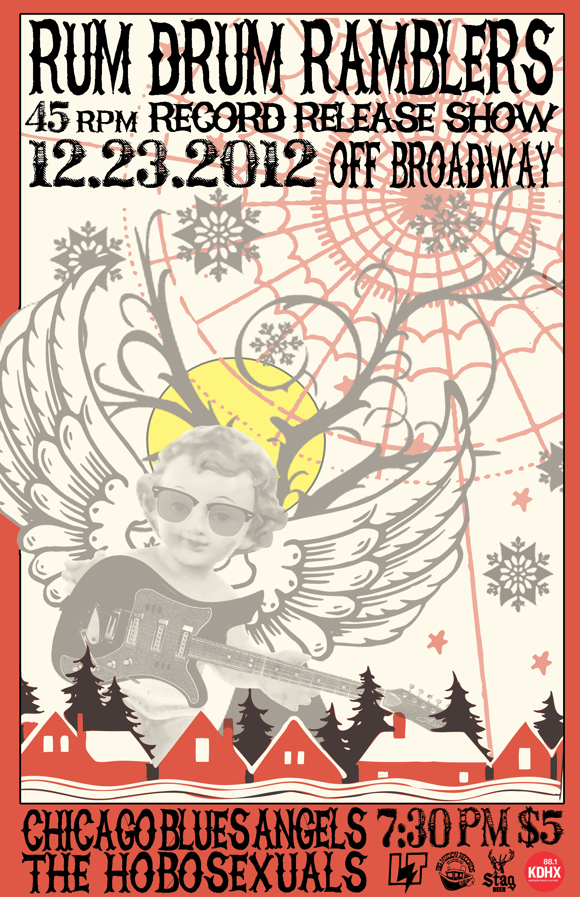
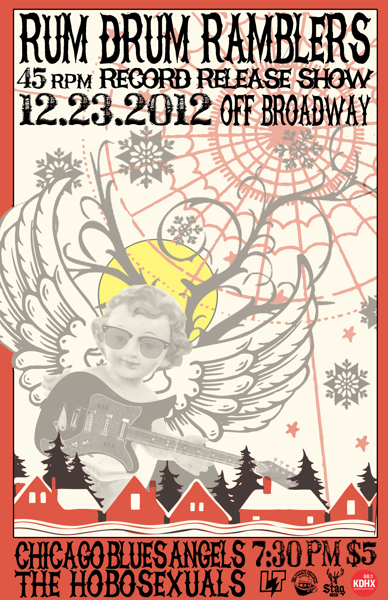

Kristo's Creative Resume
Selected Discography
Performance Discography
The Strange Places were my most recent and my favorite band. I wrote all
of the songs, sang lead vocals and played lead guitar. This band existed
from 2015-2017 and went on several Midwest tours. RIP Infinity is my
contribution to the psychedilic soundscape of American music. I also did
the graphic design.
Many of the songs in RIP Infinity started off here, in HAppY CaMP, a lo-fi
bedroom collection of songs I wrote while living, breathing, and traveling
around Earth in my twenties. A lof of these songs have to do with death,
loss, and subsequent resurrection. I played all instruments and made the
artwork.
On occasion I get to travel around playing piano for musicians like Patrick
Haggerty, the first gay singer in Country Music. Patrick Released the self-titled
Lavender Country album in 1973, a pro-Queer masterpiece that lived in
obscurity until it's re-release in 2014. Since then, Patrick has enjoyed
a resurgance and I was recruited, among many others, to bring the Lavender
Country music to a modern setting.
Old Scratch's Burnpile is a collaboration with my friend Nicky Z. It's
kind of like the Muppets gone country, but it's a little twisted and irreverent. We like
to explore the fringes of country music and desecrate the mountain of legends
that brought us here. But not in a bad way!
This is a psyche-dil-ic (that's a pickle joke) country adventure, featuring the Opus of Bacon Fat the River Rat
in two parts, which I believe to be a key missing piece of the answer to oft-asked
question, "Where did Trap Country come from?" This collection also features the A.L.L.S.A.U.C.E.
Theme and unlicensed usage of Richard Nixon's voice.
These were the b-sides to HAppY CaMP, but I didn't want to perform them so I made
up an alter ego, Paisley Estrange, who was a lounge singer in a ghost town. I played
all of the instruments except for a few drum tracks which feature one of my favorite drummers!
I also did the graphic design, which is an outfit purchased en route to a concert by the Rebel,
laid out upon a blanket I rescued from the thrift bins. I believe this is be what Paisley Estrange
wore while he worked his empty lounges.
Maximum Effort is my favorite punk rock band. They write songs about alien coverups
and government conspiracies. The guitars scorch and the lyrics pull no punches. I have
been fortunate to play keyboard on a couple of their albums! This one came out on my
record label and is a fun collection of songs.
Another fun group of songs that these guys let me put some keyboards on. The topics
of the song got a little more into technology so we got to play with some fun new
sounds on this one. I think the band sounds amazing on this record!
Production Discography
Jo Morris is a singer-songwriter who lives in New Orleans. She has one of the coolest
singing voices I have heard, and I was honored when she asked me to produce an EP for
her. We worked up some demos and arrangements with my band at the time, the Strange
Places, and came up with this really cool collection of songs. I consider this to be a
companion piece to the Strange Places full length album, RIP Infinity,
Bob Reuter is a legendary singer-songwriter from St. Louis' music scene. He
started making music in the 60s and didn't stop until his death in 2013. This
ablum is his most cohesive and his strongest full-length rock album and I
loved putting this band together and running the sessions. This album has some
killer guitar from Mat Wilson! I play piano, organ, and guitar as well.
This is a 45 rpm single featuring two songs from a later line-up of Alley Ghost. We
recorded this with Carl Nappa at Nelly's studio in downtown St. Louis. What a trip!
I played guitar and did a lot of pre-production work with this one. It's one of my
favorites because my younger brother plays guitar on this one too!
After Bob passed away, I got all the different members that had come and gone through
Alley Ghost together and we went ahead and made the album Bob intended to make. This
album has some really special songs on it, including some that Bob never got around to
recording. The band members share singing duties. I produced and played guitar and piano.
The Hooten Hallers are a great road-hardened blues rock band with a really cool
element - a killer saxophone player! This band is a lot of fun to produce and we
got to make this album in an old Masonic Temple in Cincinatti, OH with Johnny Walker
from the Soledad Brothers.
Tortuga is a supergroup of sorts that features the songs of Mike Leahy. I think at one
point we might have had 9 or 10 people on stage for live performances of this band,
but in the studio we were really able to hone in on the atmospheric elements created by
pedal steel and other auxilary instruments. It gives off an alternative spaghetti western
vibe.
Ryan Koenig is one of the great musicians from St. Louis and this is his first, but certainly
not the last, contribution to the country music history books. It features some of the
hottest players in St. Louis and Ryan is certainly one of the best songwriters
I have had the pleasure to know.
Jenny is a killer singer and a great songwriter. I had a lot of fun producing and
arranging these songs, as many of them were brought to me at the demo stage. I love
to fill songs out and think of different musicians that can really give the words life
and meaning. This project is a great example of that!


 
